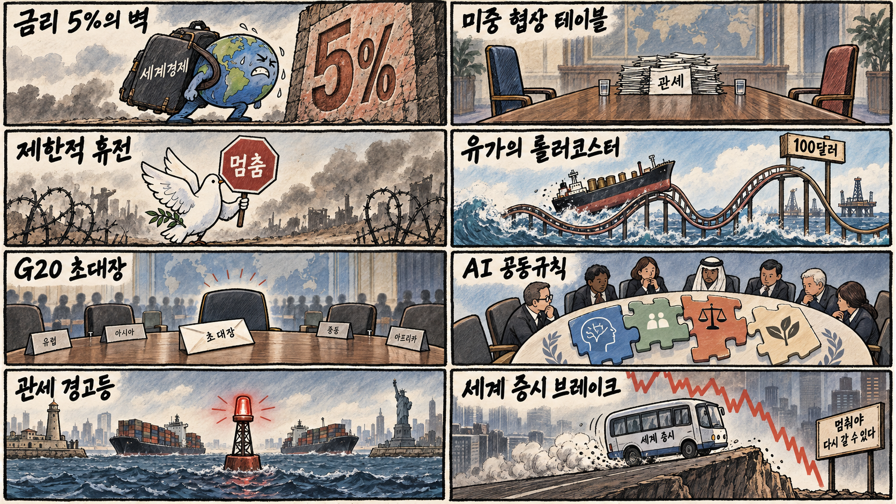
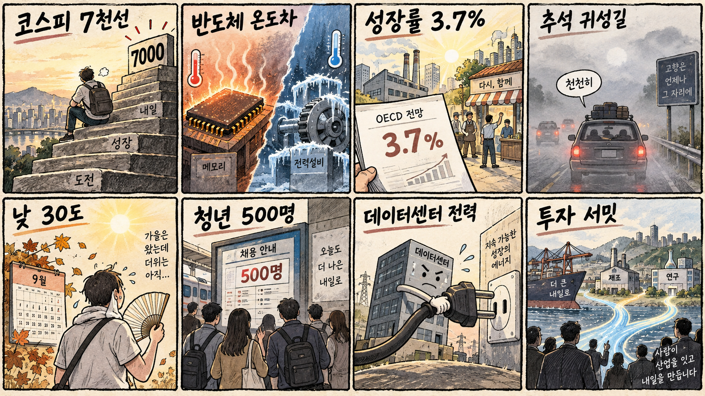

01
크라우드스트라이크 · 251.98→262.49달러 · +4.17%
내용요약 시가 대비 4.17% 올라 조사 종목 중 가장 강했습니다. 약세장에서도 사이버보안 소프트웨어가 상대 강도를 보였습니다.
예상여파 미국 기술주 전반의 조정 속 방어적 소프트웨어 선호가 이어지는지 거래량과 후속 뉴스로 확인해야 합니다.
MORNING_BRIEFING_20260924
작성 시각: 2026-09-24 06:38 KST · 직전 미국 정규장과 2026-09-24 KST 당일 공개 기사 기준
직전 미국 정규장인 9월 23일 뉴욕증시는 다우 -0.68%, S&P 500 -0.75%, 나스닥 -1.13%로 동반 하락했습니다. 미국 10년물 금리가 5.13%까지 올랐다는 당일 보도와 유가 반등이 성장주 밸류에이션에 부담을 줬고 반도체도 약세로 돌아섰습니다. 한국 증시는 전일 7,000선을 지킨 반도체 대형주의 실적 기대와 미국 금리 충격이 맞서는 만큼 장 초반 갭과 외국인 수급을 우선 확인합니다.
| 지수 | 종가 | 등락률 | 한국 증시 시사점 |
|---|---|---|---|
| 다우존스 | 51,511.59 | -0.68% | 금리·유가 부담에 지수 추격보다 방어적 대응 |
| S&P 500 | 7,706.03 | -0.75% | 금리·유가 부담에 지수 추격보다 방어적 대응 |
| 나스닥 종합 | 26,936.04 | -1.13% | 성장주·반도체의 장전 갭 하락과 낙폭 회복 여부 주목 |
장기금리 상승과 반도체 약세가 성장주에 부담을 줬습니다.
고금리 장기화 경계가 주식의 밸류에이션을 다시 압박했습니다.
전일 종가 기준 +0.90%였지만 시가 대비 -1.02%로 되밀렸습니다.
금리 충격 속 수급·컨센서스·보정 표본·손익비 문턱을 모두 통과한 후보가 없습니다.
9월 23일 보고서는 검증 문턱 미충족으로 공식 추천을 내지 않았습니다. 게시 당시 판단을 유지하며 사후 종목을 추가하지 않습니다.
| 시장 | 종가 | 등락률 | 기준 |
|---|---|---|---|
| KOSPI | 7,080.92 | +0.90% | 9월 23일 · 시가 대비 -1.02% |
| KOSDAQ | 844.48 | +1.21% | 9월 23일 · 시가 대비 +0.33% |
| 다우존스 | 51,511.59 | -0.68% | 미국 9월 23일 정규장 |
| S&P 500 | 7,706.03 | -0.75% | 미국 9월 23일 정규장 |
| 나스닥 종합 | 26,936.04 | -1.13% | 미국 9월 23일 정규장 |
크라우드스트라이크가 시가 대비 +4.17%로 조사 종목 중 가장 강했습니다.
유가 반등 속 엑슨모빌 +1.01%, 옥시덴털 +0.68%였습니다.
알파벳과 로켓랩이 각각 시가 대비 -3.42%였습니다.
마이크론 -2.55%, 브로드컴 -1.99%, AMD -1.21%로 밀렸습니다.
내용요약 시가 대비 4.17% 올라 조사 종목 중 가장 강했습니다. 약세장에서도 사이버보안 소프트웨어가 상대 강도를 보였습니다.
예상여파 미국 기술주 전반의 조정 속 방어적 소프트웨어 선호가 이어지는지 거래량과 후속 뉴스로 확인해야 합니다.
내용요약 시가 대비 2.99% 상승해 AI 소프트웨어 종목 가운데 차별화됐습니다.
예상여파 AI 테마의 선택적 강세는 국내 소프트웨어 심리에 도움을 줄 수 있지만 높은 밸류에이션과 금리 상승 위험은 남아 있습니다.
내용요약 시가 대비 3.42% 하락해 대형 인터넷주 약세가 두드러졌습니다. 공개 시세만으로 단일 원인을 확정하지 않고 금리 상승과 성장주 매도 맥락으로 봅니다.
예상여파 대형 기술주의 낙폭이 커지면 국내 인터넷·성장주 위험선호도 약해질 수 있습니다.
내용요약 시가 대비 3.42% 하락해 고변동 우주 성장주의 금리 민감도가 드러났습니다.
예상여파 미국 장기금리 상승이 이어지면 국내 우주·성장 테마의 할인율 부담도 커질 수 있습니다.
내용요약 시가 대비 2.95% 하락했습니다. 같은 날 비트코인 약세 보도와 높은 금리 환경이 변동성을 키운 맥락입니다.
예상여파 가상자산 연계주의 조정은 국내 관련주에 단기 부담이 될 수 있어 가격 반등만 보고 추격하지 않아야 합니다.
직전 거래일 KOSPI는 7,080.92로 전일 종가 대비 +0.90% 올랐지만 시가 대비로는 -1.02% 밀렸습니다. 미국 장기금리 5.13%와 나스닥·반도체 동반 약세는 국내 성장주와 HBM 공급망의 장전 갭에 부담입니다. 다만 삼성전자 강세와 7,000선 지지는 완충 요인으로, 오늘은 외국인 현물·선물 동반 수급과 반도체 낙폭 회복 여부를 먼저 확인합니다.
오늘은 추천 없음 — 현금 관망
보고서 작성 시각은 장 개시 전입니다. 미국 장기금리 급등과 반도체 약세 속에서 전일까지의 외국인·기관 수급, 최신 컨센서스 변화, 30건 이상 유사 조건 보정 확률, 예상 손익비 1.5 이상을 동시에 검증한 종목이 없어 점수와 상승확률을 임의로 만들지 않습니다.
관심 연결종목 사이버보안·에너지·HBM은 개장 후 상대강도 관찰 대상일 뿐 매수 추천이 아닙니다. 전일 급등 종목과 과도한 갭 상승 종목은 추격매수하지 않습니다.
관세·AI 반도체 통제·희토류 관련 합의와 후속 조치를 봅니다.
5.1%대 안착 여부와 성장주 할인율 부담의 확대를 확인합니다.
미국 반도체 약세를 국내 대형주가 얼마나 흡수하는지 봅니다.
전일 장중 되밀림 뒤 지지 여부와 외국인 현물·선물 수급을 확인합니다.
핵심 요약: AI 산업은 모델 출시 속도 경쟁과 국제 안전 규칙 논의를 동시에 진행하고 있습니다. 데이터센터 전력·물 공개 의무화, HBM 본딩 기술 전환, 바이오 특화 모델 투자가 인프라와 응용 영역의 다음 변화를 보여줍니다.
내용요약 빅테크의 생성형 AI 개발 경쟁이 다시 빨라지며 안전을 위한 속도 조절론보다 제품·모델 출시 경쟁이 앞서는 흐름을 짚은 당일 보도입니다.
예상여파 모델 성능과 배포 속도 경쟁은 AI 인프라 수요를 자극하지만 안전 검증·저작권·운영비 부담을 함께 키울 수 있습니다.
내용요약 유럽연합이 데이터센터의 전력과 물 사용량 공개 의무화를 추진한다는 당일 보도입니다.
예상여파 데이터센터 사업자는 에너지 효율과 냉각 기술을 투자 판단의 핵심 지표로 관리해야 하며 관련 장비·전력망 수요도 재평가될 수 있습니다.
내용요약 차세대 HBM 공정의 하이브리드 본딩 적용 시점을 두고 업계 전략이 엇갈리는 가운데 한미반도체의 현재 장비 경쟁력이 부각됐다는 당일 보도입니다.
예상여파 첨단 패키징 투자는 이어질 수 있지만 기술 전환 시점과 고객사 채택 속도에 따라 장비 업체별 실적 온도차가 커질 수 있습니다.
내용요약 생명과학 AI 기업 Basecamp Research가 신규 모델 EDEN 학습을 위해 1억4천만달러 규모 시리즈 C 투자를 유치했다는 당일 보도입니다.
예상여파 AI 투자 자금이 범용 모델에서 바이오·과학 특화 모델로 확산하며 데이터 품질과 연구개발 협업 역량이 기업가치의 핵심이 될 수 있습니다.
내용요약 오픈AI와 앤트로픽 최고경영자가 유엔 안전보장이사회에 AI 위험과 국제 공조 필요성을 설명했다는 당일 보도입니다.
예상여파 각국 규제가 엇갈리는 가운데 모델 안전성 평가와 국경 간 사고 대응 체계를 둘러싼 국제 표준 경쟁이 본격화될 수 있습니다.
핵심 요약: 미중 정상회담과 G20 외교가 대화 공간을 넓히는 한편, 미국·유럽 관세 갈등과 미·이란 긴장은 시장 위험을 높이고 있습니다. 제한적 휴전 가능성과 유가 반등이 동시에 나타나 외교 진전의 실제 이행 여부가 중요합니다.
내용요약 미국 국무장관이 러시아와 우크라이나가 제한적 휴전에 관심을 보인다고 밝혔다고 전한 당일 보도입니다.
예상여파 부분 휴전이 성사되면 에너지 시설과 민간 인프라 위험을 낮출 수 있지만 전면 종전으로 이어질지는 검증·영토 협상에 달렸습니다.
내용요약 미국이 12월 자국 개최 G20 정상회의에 러시아 대통령을 초청했고 참석을 기대한다고 밝혔다는 당일 보도입니다.
예상여파 주요국 간 외교 대화 창구가 넓어질 수 있으나 유럽의 반발과 대러 제재 공조에는 새로운 긴장이 생길 수 있습니다.
내용요약 미국과 중국 정상이 오늘 만나되 대형 합의보다는 관세·기술 통제 충돌을 관리하는 관계 안정에 무게를 둘 수 있다는 당일 전망입니다.
예상여파 회담 발언은 반도체·희토류·대중 수출주와 환율 변동성을 좌우할 수 있어 합의문보다 후속 조치의 구체성이 중요합니다.
내용요약 미국과 이란의 긴장이 이어지며 국제유가가 반등해 브렌트유가 3.86% 올랐다는 당일 속보입니다.
예상여파 에너지 가격 재상승은 물가와 운송비 부담을 높이고 금리 인하 기대를 약화시킬 수 있어 공급 경로의 안정 여부가 관건입니다.
내용요약 국제 신용평가사 피치가 미국과 유럽의 긴장을 핵심 위험으로 지목하며 관세 갈등이 다시 불붙을 수 있다고 경고했다는 당일 보도입니다.
예상여파 대서양 무역 마찰이 재점화되면 자동차·기계·소비재 공급망의 비용과 기업 투자 불확실성이 동시에 커질 수 있습니다.

핵심 요약: OECD의 성장률 상향과 투자 서밋은 경기 기대를 높였지만 반도체 가격 괴리와 미국 금리 충격은 시장 변동성을 키웁니다. 추석 귀성길에는 짙은 안개와 낮 30도 안팎의 늦더위에 유의해야 합니다.
내용요약 OECD가 2026년 한국 경제성장률 전망을 3.7%로 높였으며 G20 국가 가운데 상향 폭이 가장 컸다는 당일 보도입니다.
예상여파 수출과 내수 기대에는 긍정적이지만 높은 기저와 금리·유가 변수를 감안해 업종별 이익 개선의 실제 확산을 확인해야 합니다.
내용요약 대한민국 투자 서밋 2026 행사가 열려 국내 투자 확대와 산업 협력 의제가 제시됐다는 당일 현장 보도입니다.
예상여파 발표된 투자 계획이 공장·연구개발·고용 집행으로 이어지는지 후속 일정과 재원 구체성을 점검할 필요가 있습니다.
내용요약 SK하이닉스 미국예탁증서의 프리미엄 과열을 지적하며 국내 본주와의 가격 차이를 살펴야 한다는 당일 분석입니다.
예상여파 AI 메모리 기대가 강하더라도 시장 간 가격 괴리와 단기 과열은 변동성을 키울 수 있어 장전 갭 추격을 피해야 합니다.
내용요약 한국철도공사가 2026년 하반기 체험형 청년인턴 500명을 채용한다는 당일 공기업 채용 보도입니다.
예상여파 대규모 공공기관 채용은 청년의 직무 경험 확대에 도움을 줄 수 있으며 지원 일정과 자격 요건 확인이 중요합니다.
내용요약 추석 연휴 첫날 전국 곳곳에 짙은 안개가 끼고 낮 기온은 최고 30도까지 오를 수 있다는 당일 기상 보도입니다.
예상여파 귀성길 운전자는 감속과 안전거리를 지키고 큰 일교차에 대비해야 하며 내일부터 예상되는 비 정보도 함께 확인해야 합니다.
